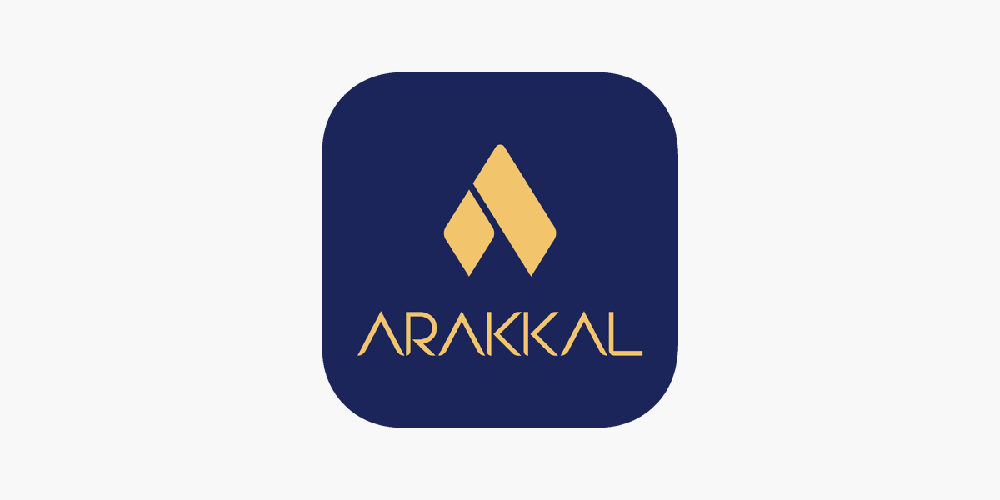
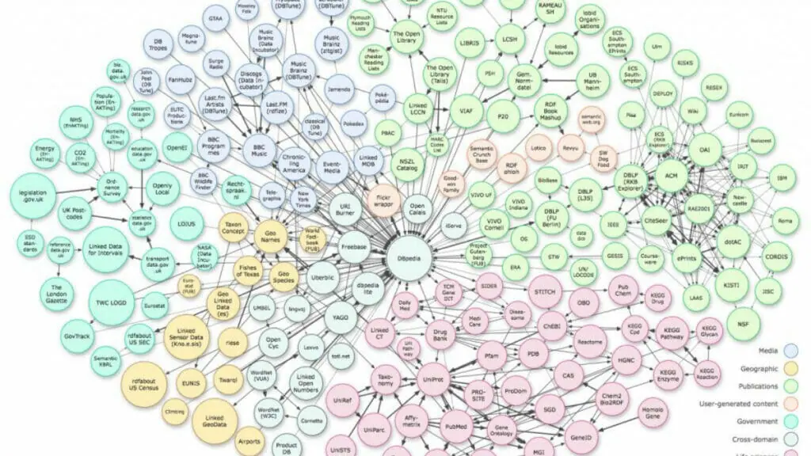

Projects

App
Portfolio Website for Arakkal Bullion, a gold trading company.
A portfolio website which allows customers and potential costumers to get latest
information about gold in the market and see the variety of products and servies offered
by Arakkal Bullion. The front end was developed using flutter a hybrid development
enivironment and it was backed by google cloud services.
Detect sleep states - Child mind institute
Frederic J Maliakkal, Anuj Asati, Shivang Sharma, Harshvivek Kashid
FML
2022
Develop a model for detection of sleep onset and wake up periods using wrist-worn
accelerometer data.We used different approaches and models for the same. Since its a
time series data wiht dependence on the previous state RNN gave the highest accuracy.
Some of the models we implemented during the project are RNN, Random Forest, Bossting
and stacking.

Code
Information retrieval from knowledge graph and a question answer interface based on the
knowledge graph.
Frederic J Maliakkal, Shariq Faraz
Web search and mining
2022
Using the imdb1000 dataset we created a direction knowledge graph. we are given a set of
100 questions ans answers for traingin a model to parse the questions correctly and
answer them based on the knowledge graph. So for every question we traverse through the
knowledge graph and find a node as output to the question. The graph is created using
NetworkX, converted to graph embedding using torch-geometry and Haystack is used to do
the question answering.
| App |
A portfolio website which allows customers and potential costumers to get latest information about gold in the market and see the variety of products and servies offered by Arakkal Bullion. The front end was developed using flutter a hybrid development enivironment and it was backed by google cloud services.
Frederic J Maliakkal, Anuj Asati, Shivang Sharma, Harshvivek Kashid
FML
2022
Develop a model for detection of sleep onset and wake up periods using wrist-worn accelerometer data.We used different approaches and models for the same. Since its a time series data wiht dependence on the previous state RNN gave the highest accuracy. Some of the models we implemented during the project are RNN, Random Forest, Bossting and stacking.
| Code |
Frederic J Maliakkal, Shariq Faraz
Web search and mining
2022
Using the imdb1000 dataset we created a direction knowledge graph. we are given a set of 100 questions ans answers for traingin a model to parse the questions correctly and answer them based on the knowledge graph. So for every question we traverse through the knowledge graph and find a node as output to the question. The graph is created using NetworkX, converted to graph embedding using torch-geometry and Haystack is used to do the question answering.